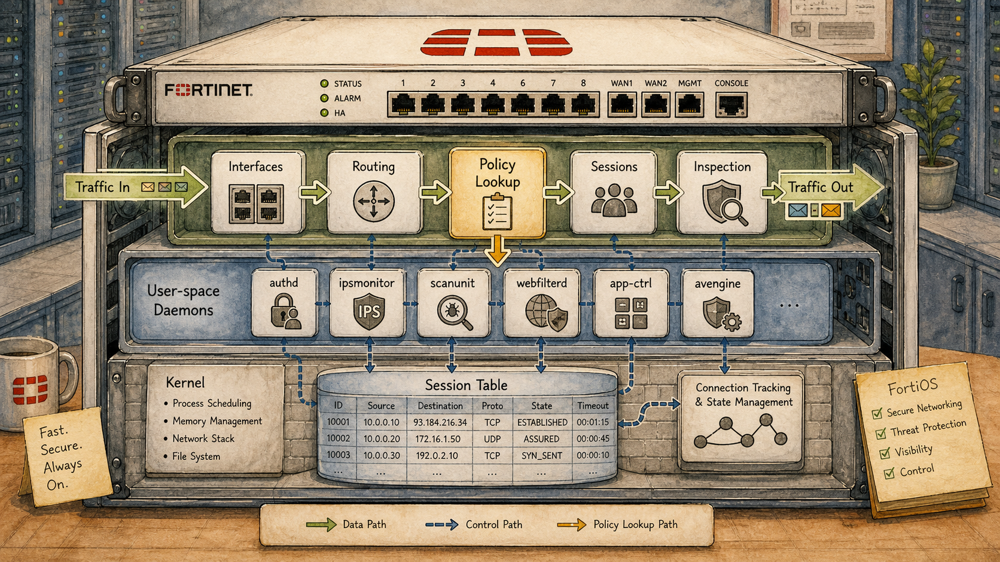

Ready to Begin the Session
| Official NSE7 EF Blueprint Objectives |
|
| Prerequisites | Session 01: The NSE7 Story — Roles, Audience & Exam Map |
| Estimated Duration | 25 minutes |
| Phase | Phase 1 — Foundations: Network Security Architecture |
Session 02 — FortiOS 7.6 — Architecture Overview Where we are in the NSE7 journey: Every CLI command we run for the next 40 sessions is interpreted by one piece of software: FortiOS. Knowing how it's structured tells you why some features live in the kernel and some in user space — and why upgrade paths matter. The problem we're solving today: Understanding flow-mode vs proxy-mode, the central session table, and the per-VDOM virtualization model lets you reason about *what is offloaded and what isn't*. That single instinct is decisive in HA, security profiles, and hardware acceleration. Session goal: Explain what the session table is and predict which feature combinations force a session into proxy mode. Key concepts: • Flow-based vs proxy-based inspection (where features split) • The session table as the central data structure • Per-VDOM virtualization model • Configuration scope: global vs vdom • Upgrade compatibility matrix and the 'follow the path' rule
Where We Are in the NSE7 Journey

A cutaway of a FortiGate appliance showing FortiOS internals.
Every CLI command we run for the next 40 sessions is interpreted by one piece of software: FortiOS. Knowing how it's structured tells you why some features live in the kernel and some in user space — and why upgrade paths matter.
The Problem We're Solving Today
Understanding flow-mode vs proxy-mode, the central session table, and the per-VDOM virtualization model lets you reason about *what is offloaded and what isn't*. That single instinct is decisive in HA, security profiles, and hardware acceleration.
Key Concepts
- Flow-based vs proxy-based inspection (where features split)
- The session table as the central data structure
- Per-VDOM virtualization model
- Configuration scope: global vs vdom
- Upgrade compatibility matrix and the 'follow the path' rule
What We Discovered Together
Parsed from the persistent session summary produced at the end of the Socratic investigation. Use it to rebuild context before a review or a lab.
Session Information
- Session Number02
- TopicFortiOS Architecture Overview
- DateJuly 2026
- CertificationFortinet NSE7 Enterprise Firewall 7.6
Story Progress
Setting: Vaultline Financial — Monday morning following a Friday evening trading floor incident.
Priya (Head of Network Security) was waiting at the security desk rather than her desk upstairs. A junior engineer had enabled a new security profile on the trading VLAN policy Friday at 17:00. By 19:00, trading system latency had climbed from under one millisecond to forty milliseconds. The on-call team rolled back the profile at 21:00; recovery took minutes.
The session opened with Priya's question: "Why did enabling one security profile on one policy affect latency across the entire trading session — not just the new traffic going through that profile?" This framed the entire lesson — the answer required understanding the session table, proxy mode, and how session entries govern all subsequent packets.
Characters introduced/continued: Priya (Head of Network Security) — recurring from Sessions 39/40. Marcus and Daniel remain referenced as established characters.
Outstanding: The VDOM architecture for Vaultline was proposed as the solution to the split-policy problem. A Trading VDOM (flow-only, NP7 guaranteed) and Corporate VDOM (proxy profiles acceptable) were scoped. The inter-VDOM link design was discussed conceptually. This architecture remains unimplemented — natural engineering task for a future session.
Cliffhanger: The Vaultline split-policy VDOM architecture has been designed but not deployed. Priya now has the architectural understanding. The next step is implementation and validation — a future session could cover VDOM creation, interface assignment, inter-VDOM link configuration, and the management VDOM designation.
Concepts Learned
The session table is the single most important data structure in FortiOS. When the first packet of a connection arrives, the CPU evaluates the matching policy and creates a session entry recording: session ID, source/destination/protocol, matched policy ID, egress interface, NAT details, and the NP7 offload verdict. Every subsequent packet in that connection follows the recorded verdict without the CPU being consulted again.
Why it exists: re-evaluating every packet from scratch would consume CPU cycles proportional to traffic volume. The session table allows one-time evaluation and hardware-speed forwarding for all subsequent packets.
Policy changes never retroactively update existing session entries. Existing sessions retain the verdict recorded at setup time until they expire naturally. New sessions pick up the new policy immediately. This explains gradual performance degradation after policy changes in high-frequency environments — old sessions expire while new sessions accumulate under the new policy.
Flow mode: FortiOS is a forwarder. One session entry. NP7 offload eligible. Packets inspected as they pass through. End-to-end connection maintained between client and server.
Proxy mode: FortiOS terminates the connection. Two session entries per user connection (client→FortiGate, FortiGate→server). Both entries are CPU-bound. The NP7 cannot terminate TCP connections or reassemble application streams — architecturally incompatible with proxy mode. Enables deeper inspection but at significant performance cost.
In FortiOS 7.6, the inspection mode is inferred from the security profiles attached to the policy. The administrator does not explicitly select flow or proxy mode per policy — it emerges from profile selection.
VDOMs virtualise a single physical FortiGate into multiple independent logical firewall instances. Each VDOM has its own policy table, routing table, session table, interface assignments, and administrative scope. A change inside one VDOM cannot affect any other VDOM.
VDOMs exist because growing enterprise networks eventually hit the limits of a single flat configuration: all-or-nothing administrative access, shared routing table blast radius, and increasingly complex policy tables serving multiple security zones with different requirements.
Inter-VDOM links connect VDOMs internally without physical cabling. Each end appears to its VDOM as a regular interface — it has an IP address, participates in that VDOM's routing table, and traffic crossing it is subject to policy evaluation on both sides.
Global scope: configuration that belongs to the physical device rather than to any logical instance. Includes VDOM creation/deletion, physical interface definitions and VDOM assignment, global administrator accounts, firmware, licensing, and HA configuration.
VDOM scope: configuration specific to one logical firewall instance. Includes firewall policies, routing tables, security profiles, and VDOM-scoped administrator accounts.
The management VDOM: exactly one designated VDOM handles all of the FortiGate's own management traffic — FortiManager connections, FortiAnalyzer log streams, firmware updates, DNS. Only one management VDOM can exist at any time.
My Understanding
Strong Areas- Correctly identified that the proxy mode shift was causing the Friday incident before being told
- Strong intuition that existing sessions would be unaffected until FIN — and correctly revised this when presented with the two-hour timeline evidence (sessions cycling through naturally)
- Correctly reasoned that proxy mode means FortiOS terminates the connection, and therefore two session entries must exist
- Independently derived VDOMs as the solution to the flat-configuration administrative access problem
- Correctly identified inter-VDOM links and their properties
- Correctly stated exactly one management VDOM
- Initially unsure what happens to existing sessions when a policy changes mid-flight — required guided evidence-based reasoning
- Initially uncertain what triggers flow vs proxy mode selection (needed guidance toward the profile-inference model)
- Described VDOM isolation as "policy sets" when the fuller answer was "isolated policy table, routing table, and session table"
- None requiring significant correction — reasoning was consistently directionally correct. The main refinement was precision: "blast radius" language was good but needed to be grounded in the specific mechanisms (session table isolation, policy table isolation) rather than remaining abstract.
- The two-hour latency timeline reasoning: "Maybe the two hour timeline was when existing sessions were dying down and new sessions were beginning" — this is exactly correct and demonstrated strong causal reasoning
- Correctly identified that an inter-VDOM link looks like "just another interface" to each VDOM — immediately understood the elegance of the design
- Correctly stated the management VDOM limit without hesitation
Troubleshooting Experience
Fault Scenario: offload=0/0 with no_ofld_reason: rsvd in a trading VDOM session despite no proxy profiles on any policy.
Troubleshooting process developed1. Consider session duration — very short-lived sessions may expire before offload evaluation completes (rsvd is consistent with this)
2. Identify the protocol — does it require a session helper?
3. Check ingress interface — is it a software tunnel?
4. Check policy — is auto-asic-offload explicitly disabled?
5. Review attached profiles — is any profile implicitly forcing proxy mode?
Key lesson: read no_ofld_reason before running any additional commands. It categorises the problem as constraint (architectural, cannot be fixed) vs decision (configuration, can be reversed) in one glance.
Constraints identified: session helpers (FTP, SIP, H.323), software tunnel interfaces (GRE, SSL VPN)
Decisions identified: proxy-based profile attached, auto-asic-offload disabled on policy
Connections
Previous SessionsSessions 39 and 40 introduced the NP7 offload mechanism and the session table offload verdict fields (offload=X/Y, no_ofld_reason). Session 02 provides the architectural context for those fields — explaining what the session table is, why it exists, and how the offload verdict relates to the broader flow vs proxy decision.
Session 01 established the three-product landscape. Session 02 begins the deep dive into FortiOS internals.
Extras CLI Reference: the session table was introduced as living under diagnose sys session list — consistent with the CLI taxonomy established in the CLI extras session (diagnose = raw engine state, not operational summary).
Future Topics- VDOM configuration and implementation: inter-VDOM link setup, interface assignment, management VDOM designation
- HA clustering: does session table synchronisation include offload state? What happens to NP7 sessions during failover?
- SD-WAN: how does hardware acceleration interact with SD-WAN steering decisions?
- FortiManager: auditing inspection mode and auto-asic-offload settings at scale across a managed estate
- Security Fabric: how do VDOMs participate in the Security Fabric? Is Fabric membership per-VDOM or device-wide?
Important Takeaways
Future Session Notes
Concepts Requiring Reinforcement- The two-session-entry model for proxy connections — worth testing in a scenario that asks the student to predict session count and CPU impact
- The profile-inference model for flow vs proxy selection — exam commonly tests this with scenarios where an engineer enables a feature without realising the mode consequence
- Global vs VDOM scope boundary — common exam topic; the management VDOM detail is frequently tested
- In 1 session: present a policy with multiple profile types and ask which mode and why
- In 2 sessions: VDOM configuration scenario — ask the student to identify which commands go under config global vs config vdom
- In 4 sessions: revisit the full session table anatomy with a complete diagnose sys session list output and ask for interpretation
- Vaultline VDOM architecture is designed but unimplemented — natural next engineering challenge
- Priya now understands the root cause; she will want a formal implementation plan
- The junior engineer from Friday should make a return appearance in a future session — good vehicle for "what should the change process have caught?"
- Marcus as the NOC engineer who would monitor the VDOM implementation
Natural Opportunities for Future NSE7 Topics:
- VDOM implementation and inter-VDOM link configuration (next logical session)
- HA clustering: session sync across VDOMs, offload state after failover
- FortiManager VDOM management: pushing policy to specific VDOMs from central management
- Security Fabric: VDOM participation in Fabric topology
Guides, Bites & Nibbles
Additional resources sorted to this session — deeper guides, focused explainers, and quick-reference cards.